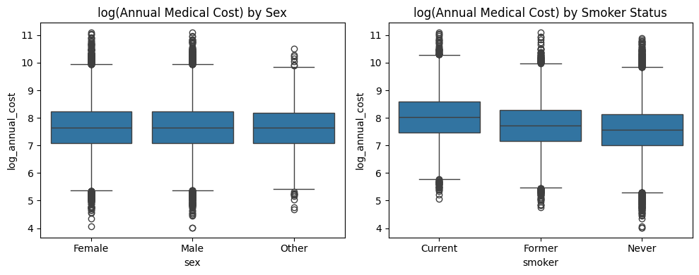
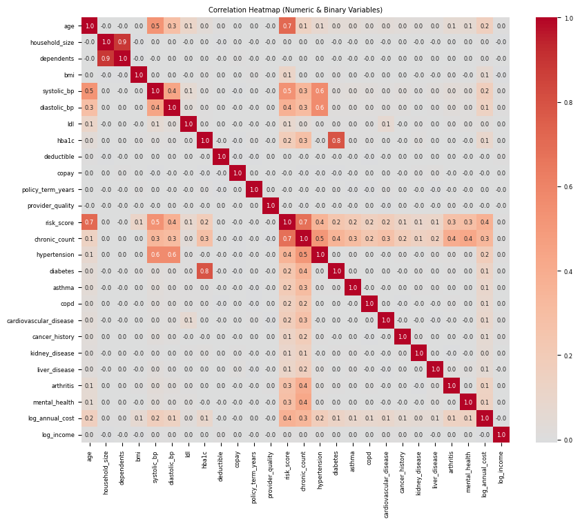

The Medical Insurance Dataset Analysis
Completed for the course Statistical and Machine Learning, Fall 2025
Analysis performed in Python.
Image from Unsplash
The Medical Insurance Dataset
Sourced from Kaggle, the medical insurance dataset contains 54 demographic, clinical, and insurance features for 100,000 clients.
The goal of this analysis is to perform regression modeling to predict clients' annual medical costs based on the demographic, clinical, and insurance features provided in the dataset.
After removing predictors which are unnecessary or would create data leakage, removing rows with anomalous data, and log-transforming skewed predictors, the dataset includes 96,956 clients and the following 36 features:
Numerical columns:
- age: Age of the client (years)
- log_income: Logarithm of annual income (USD)
- household_size: Number of people in the client's household
- dependents: Number of the client's financial dependents
- bmi: Body Mass Index
- systolic_bp: Systolic blood pressure (mmHg)
- diastolic_bp: Diastolic blood pressure (mmHg)
- ldl: LDL cholesterol level (mg/dL)
- hba1c: Hemoglobin A1c percentage
- deductible: Annual deductible (USD)
- copay: Copayment amount per healthcare service (USD)
- policy_term_years: Length of the insurance policy (years)
- provider_quality: Quality rating of the primary care provider/insurer (rated on a scale 0-5)
- risk_score: Calculated health risk score (0-1, normalized)
- chronic_count: Number of chronic conditions diagnosed
- log_annual_cost: Logarithm of total annual medical cost (USD) - The variable of interest
Categorical columns:
- sex: The client's sex
- region: The client's geographical region
- urban_rural: Whether the client lives in an Urban, Suburban, or Rural area
- education: The client's highest attained education
- marital_status: Marital status
- employment_status: Employment type/status
- smoker: Smoking status
- alcohol_freq: Frequency of alcohol consumption
- plan_type: Type of insurance plan
- network_tier: Insurance network tier
- hypertension: Hypertension diagnosed
- diabetes: Diabetes diagnosed
- asthma: Asthma diagnosed
- copd: Chronic Obstructive Pulmonary Disease diagnosed
- cardiovascular_disease: Cardiovascular disease diagnosed
- cancer_history: History of cancer
- kidney_disease: Kidney disease diagnosed
- liver_disease: Liver Disease diagnosed
- arthritis: Arthrisis diagnosed
- mental_health: Diagnosed mental health condition
Exploratory Data Analysis
Categorical Predictors
Overall, log_annual_cost does not appear to vary depending on category for the predictors sex, region, urban_rural, education, marital_status, employment_status, alcohol_freq, plan_type, or network_tier because the boxplots appear approxmately uniform across categories for those predictors. Only the boxplot for sex is included here to represent the relationship between those predictors and log_annual_cost.

However, smoker appears to have an effect on log_annual_cost since clients who never smoked had a noticeably lower minimum, 25th percentile, median, 75th percentile, and maximum log(Annual Medical Cost) (ignoring outliers) than former smokers, who had lower values at each percentile than current smokers. This suggests that smoker would be a useful predictor for modeling.
For the discrete numerical predictors:
- household_size and dependents appear to have no relationship to log (annual medical cost) since the distribution of log_annual_cost decreases in variance around the mean/median value as the predictor values increase and thus become less common.
- deductible, copay, and policy_term_years appear to have no relationship to log(annual medical cost) since the distribution of log_annual_cost is uniform across all values for those predictors.
- chronic_count may have some very weak relationship with log(annual medical cost) because the distribution of log_annual_cost appears to skew above the mean/median value as the predictor values increase.
For the continuous numerical predictors:
- log_income, ldl, and provider_quality have no correlation with log(annual medical cost).
- age, systolic_bp, diastolic_bp, and hba1c appear to have very weak positive correlations with log(annual medical cost).
- risk_score has a noticeable but weak positive correlation with log(annual medical cost).
Only the plots for household_size, deductible, chronic_count, log_income, age, and risk_score are included here to represent the various relationship patterns between numerical predictors and log_annual_cost.
All binary predictors appear to have a minor relationship with annual medical cost because, for each predictor, clients who had the condition had a noticeably lower minimum, 25th percentile, median, 75th percentile, and maximum log(Annual Medical Cost) (ignoring outliers) than clients without the condition. The difference in median log(Aunnual Medical Cost) between clients who had and did not have each condition is about equal, suggesting that all binary predictors could be a useful for modeling.
Only the boxplot for hypertension is included here to represent the relationship between all binary predictors and log_annual_cost.
Correlations among predictors (>= 0.4) which can be intuitively explained:
Among health conditions and risks:
- chronic_count with risk_score (0.7): clients with chronic conditions are higher risk.
- chronic_count and risk_score with nearly all of the health conditions (hypertension, diabetes, etc.): many of those conditions are chronic and increase clients' health risks.
- diabetes and hba1c (0.8): diabetes is characterized by high hba1c.
- age with risk score (0.7) and systolic_bp (0.5): older people typically have more health risks and have higher risk of high blood pressure.
- hypertension with systolic_bp (0.6) and diastolic_bp (0.6): hypertension is high blood pressure.
- systolic_bp and diastolic_bp (0.4): higher pressure when the blood is pumped out of the heart (systolic pressure) is often accompanied by higher pressure when the blood is filling the heart (diastolic pressure).
Among healthcare/insurance factors:
- household_size and dependents (0.9): people living in the same household as the client (especially children) are typically their dependents.
When modeling with these combinations of predictors, we should include interaction terms, use regularization methods, or tree-based methods to properly handle the correlations.

Correlations between the response and predictors:
- log_annual_cost has its strongest correlations (>=0.3) with risk_score (0.4), and chronic_count (0.3), suggesting that these are the most important numeric predictors to include in a model.
- log_annual_cost has weaker correlations (=0.2) with age, systolic_bp, and hypertension, suggesting that these would also be useful predictors for modeling.
Model Development
Linear Regression
A lasso regression model pushed the coefficients of 21 predictors and dummy variables for categorical predictors to 0, suggesting that these are not useful predictors for a linear regression model. Many other predictors have coefficients close to 0, so the linear regression model will keep the following 15 predictors which had coefficients for which the absolute value is >= 0.01: chronic_count, age, risk_score, bmi, diabetes, copd, chronic_count*diabetes, chronic_count*arthritis, risk_score*copd, chronic_count*hypertension, risk_score*diabetes, chronic_count*mental_health, risk_score*age, risk_score*chronic_count, and smoker.
The predictors arthritis, hypertension, and mental_health will also be included in the linear regression model since they are used in the significant interaction terms, although they are not significant themselves.
| Variable |
Coefficient |
| chronic_count |
0.457581 |
| risk_score |
0.252727 |
| copd |
0.138358 |
| diabetes |
0.111011 |
| mental_health |
0.061628 |
| arthritis |
0.054312 |
| hypertension |
0.046657 |
| bmi |
0.011475 |
| age |
0.008577 |
| risk_score*age |
-0.002962 |
| risk_score |
0.252727 |
| chronic_count*diabetes |
-0.014421 |
| chronic_count*hypertension |
-0.028496 |
| chronic_count*arthritis |
-0.030559 |
| chronic_count*mental_health |
-0.037021 |
| risk_score*diabetes |
-0.129977 |
| risk_score*copd |
-0.154252 |
| risk_score*chronic_count |
-0.156308 |
| smoker_Former |
-0.313058 |
| smoker_Never |
-0.457670 |
Interpretation
Mean R^2 from cross-validation: 0.168. On average, a linear regression model explains about 16.8% of the out of sample variation in log annual medical costs. Although seemingly low, this is actually a reasonable value for medical cost regressions since it is a difficult target to predict.
Main Coefficients
- The coefficients for clients who formerly and never smoked are drastically negative (-0.313 and -0.458). This tells us that smoking is a key contributer to higher medical costs in comparison to the last variable of smoking, which is current smoker.
- Each chronic condition a client has increases log annual medical cost drastically (0.458 log(USD) per chronic condition).
- Risk score increases are associated with higher medical costs (0.252 higher log annual medical cost for clients with a risk score of 1 compared to clients with a risk score of 0).
- Age has a surprisingly small coefficient, telling us that with age, log annual medical cost increases slowly (0.008 log(USD) per 1 year increase in age).